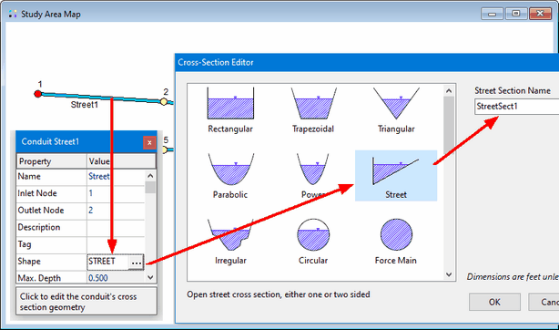

Now that we have defined the dimensions and roughness of a Street cross-section we can apply it to the streets in our model. To do so:
| 1. | Select Street1 and open its Property Editor. |
| 2. | Select the Shape field and click the ellipsis button (or simply press the Enter key). |
| 3. | In the Cross-Section Editor that appears, select the Street shape. |
| 4. | In the Street Section Name combo box, select our only available street cross-section named StreetSect1. |
| 5. | Repeat these steps for Street2 and Street3. |

If a number of street conduits are clustered or linked together and share the same cross-section then instead of setting their Shape property one at a time SWMM's group editing feature can be used to assign them the desired cross-section all at once. |